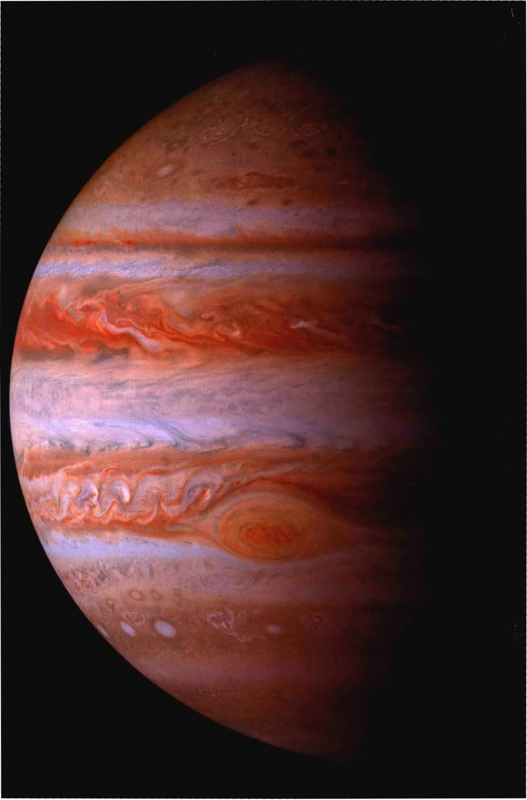
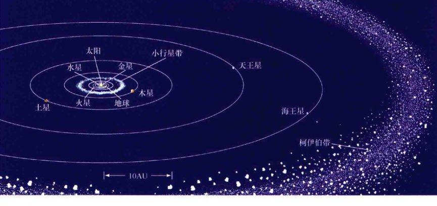
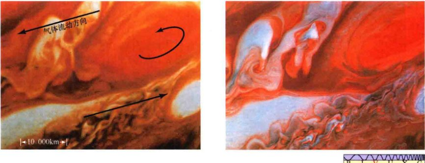
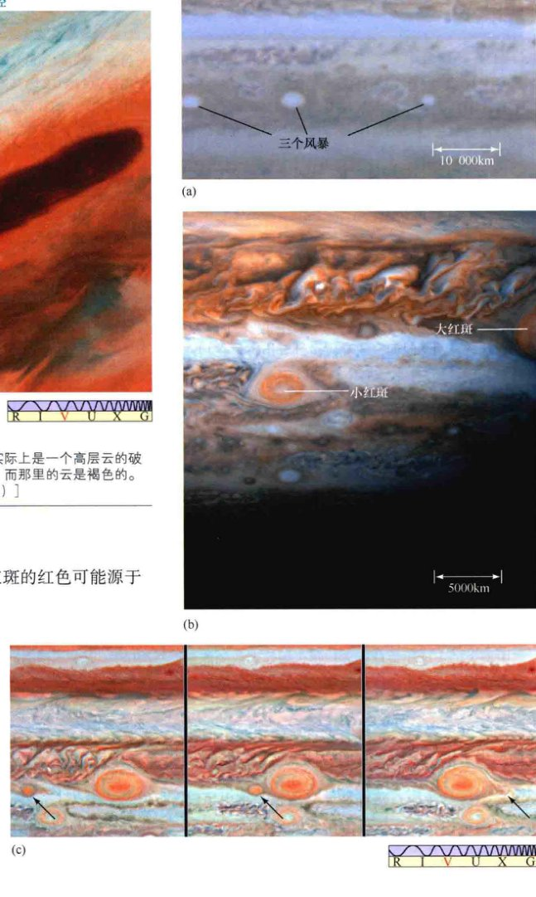
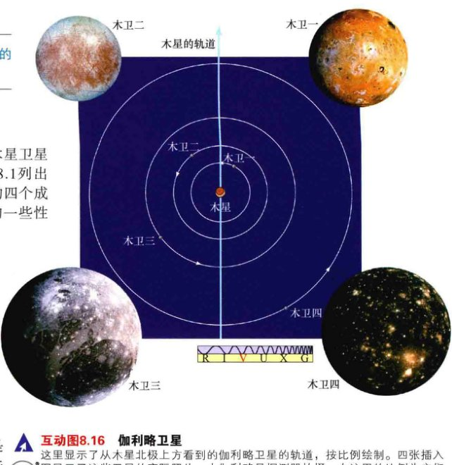
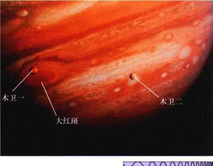
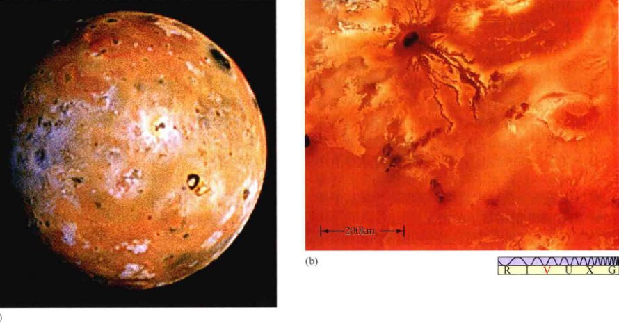
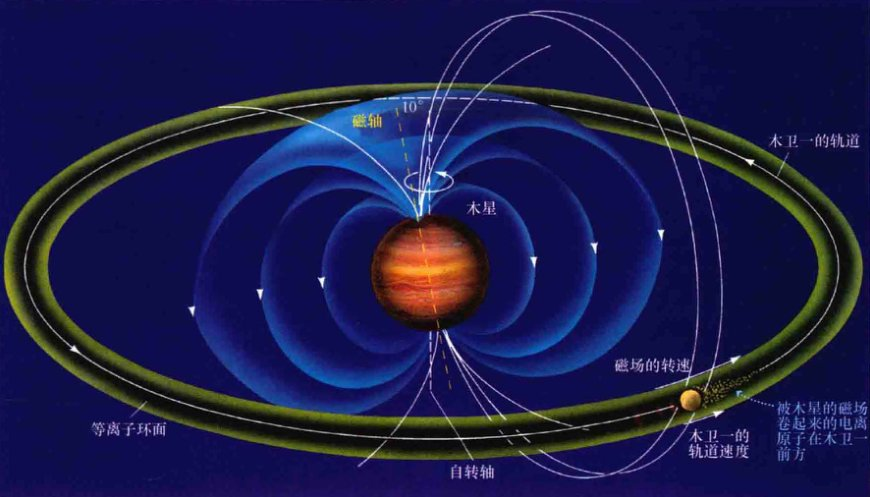
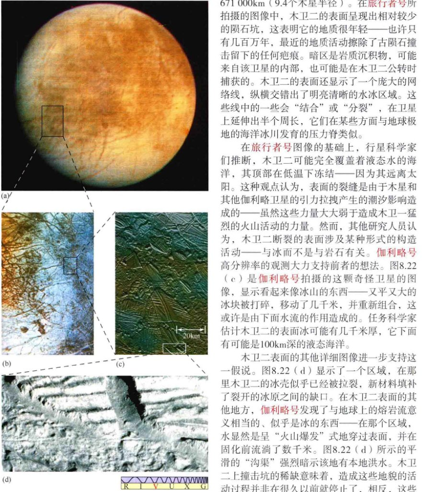
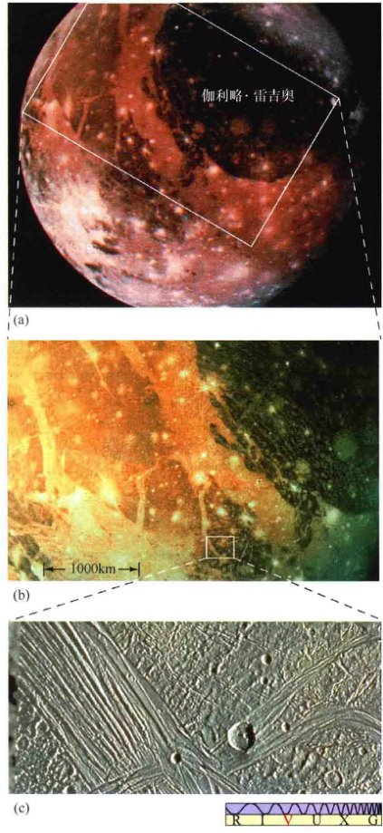

<style>
    /* 基础样式：沉浸式阅读体验 */
    body { 
        font-family: -apple-system, BlinkMacSystemFont, "Segoe UI", Roboto, "Helvetica Neue", Arial, sans-serif; 
        line-height: 1.8; 
        color: #333;
        max-width: 800px; 
        margin: 0 auto; 
        padding: 40px 20px; 
        background-color: #fff;
    }

    /* 章节单元 */
    .chapter-unit { margin-bottom: 60px; }

    /* 标题体系 */
    h1 { font-size: 2.5em; color: #2c3e50; border-bottom: 2px solid #3498db; padding-bottom: 15px; margin-top: 0; }
    h1 .subtitle { display: block; font-size: 0.6em; color: #f39c12; margin-top: 10px; font-weight: normal; }
    h2 { font-size: 1.8em; color: #34495e; margin-top: 50px; border-left: 5px solid #e74c3c; padding-left: 15px; }
    h3 { font-size: 1.4em; color: #2980b9; margin-top: 35px; }
    
    /* 正文 */
    p { margin-bottom: 1.5em; text-align: justify; }

    /* 特殊区域 */
    .sidebar { background: #f7f9fb; padding: 25px; border-left: 5px solid #3498db; margin: 30px 0; border-radius: 4px; }
    .sidebar h3 { margin-top: 0; color: #2c3e50; }
    .concept-check { background: #e8f8f5; padding: 20px; border: 1px solid #a3e4d7; border-radius: 8px; margin: 30px 0; color: #16a085; }
    .concept-check::before { content: "✅ 概念理解检查"; display: block; font-weight: bold; margin-bottom: 10px; }
    .exercises { background: #fffcf0; padding: 25px; margin: 40px 0; border: 1px solid #f0e6d2; border-radius: 8px; }
    .question-list li { margin-bottom: 10px; }

    /* 表格 */
    table { width: 100%; border-collapse: collapse; margin: 20px 0; font-size: 0.9em; }
    th, td { border: 1px solid #ddd; padding: 12px 8px; text-align: center; }
    th { background-color: #f2f2f2; color: #333; font-weight: bold; }
    tr:nth-child(even) { background-color: #f9f9f9; }
    
    /* 图片占位符 */
    .image-placeholder { 
        background: #f8f9fa; border: 1px dashed #dee2e6; 
        display: flex; flex-direction: column; align-items: center; justify-content: center;
        margin: 25px auto 10px auto; 
        color: #6c757d; font-family: monospace; font-size: 0.8em;
        padding: 10px;
        position: relative;
    }
    .image-placeholder::before { content: "🖼️ Image Area " attr(data-bbox); display: block; margin-bottom: 5px; font-weight: bold; }
    .caption { font-size: 0.9em; color: #666; text-align: center; margin-bottom: 35px; font-style: italic; line-height: 1.5; }
    .caption strong { color: #e74c3c; font-style: normal; }

    /* 科学符号 */
    sup { font-size: 0.75em; vertical-align: super; }
</style>
<article class="chapter-unit">

        (Page 1: 木星全景特写)
    
<h1>第8章 木星 <span class="subtitle">太阳系里的巨人</span></h1>
<div class="sidebar">
<h3>学习目标</h3>
<p>本章的学习将使你能够：</p>
<ol>
<li>详细说明木星在其物理和轨道特性方面如何不同于类地行星。</li>
<li>概述造就木星大气外观的过程。</li>
<li>描述木星的内部结构和组成，并解释如何从外部测量推断它们的性质。</li>
<li>总结木星磁层的特点。</li>
<li>列出木星的伽利略卫星的轨道和物理性质，并描述每颗卫星的外观和内部结构。</li>
<li>解释潮汐力如何能对木星的卫星产生巨大的内压力，并讨论这些压力的一些影响。</li>
</ol>
<p><strong>精通天文学</strong><br/>访问 MasteringAstronomy 网站的学习板块，获取小测验、动画、视频、互动图，以及自学教程。</p>
</div>
<p>在火星轨道之外，外太阳系与我们地球所处的宇宙环境有很大不同。外太阳系给我们展现了一个完全陌生的环境：巨大的气体球、奇特的卫星、复杂的光环系统，以及多种物理和化学现象，其中有许多我们仍然知之甚少。虽然类木行星——木星、土星、天王星和海王星——彼此在许多方面有所不同，但我们会发现它们也有很多共同点。正如我们对类地行星所做的，我们将学习它们之间的相似和不同之处。</p>
<p>我们对这些外星世界的研究开始于与地球最接近的类木行星：木星——太阳系中最大的行星。在质量、成分和内部结构方面，它均提供了其他类木行星的范本。</p>
<div class="sidebar">
<h3>知识全景</h3>
<p>我们的太阳系中的其他行星可能会提供一些关于我们自己的线索和提示，尽管它们有许多特殊性质。被观测和破译的类木行星大气中的天气模式可能会特别有用。天文学家们正在用望远镜和航天器研究木星的云的高度、风速、气体温度和化学成分。他们不仅要了解木星本身，而且还要获得对地球的比较性了解，最明显的是要了解在我们这颗小得多的行星上不断变化的气候。</p>
</div>
<div class="caption">
<strong>左图：</strong> 木星是太阳系中最迷人的天体之一。这张真彩色的照片，由卡西尼号飞船上的相机拍摄的二十多张照片拼接而成，是史上最精细的木星肖像，解析了小到60km尺度的特征。请注意中下方的大红斑——已经运行了几百年的风暴。在这里看到的一切都是云，从显示出交替明暗结构的赤道地区，到出现更多斑驳的高纬度地区。[喷气推进实验室 (JPL)]
    </div>
<h2>11.1 轨道和物理性质</h2>
<p>木星以罗马神话中最强大的神的名字朱庇特 (Jupiter) 命名，是迄今为止太阳系中最大的行星。古代天文学家无法知道木星的真实大小，但他们选择的名字是贴切的。</p>
<h3>从地球欣赏</h3>
<p>木星是太阳系的第五颗行星，也是最靠内的类木行星（图11.1）。它是夜空中第三亮的天体（排名在月亮和金星之后），因此很容易被找到和研究。类似火星的情况，木星在冲日附近时最亮。如果冲日恰好发生在近日点附近，那么木星的视大小可以达到50"，甚至通过小型望远镜也能看出很多细节。</p>
<p>图11.2 (a) 是在地球上通过望远镜拍摄的木星照片。与类地行星相比，木星有许多卫星，这些卫星的大小和性质差别很大。其中最大的四个，在这个望远镜视图中可见（并且，对少数人来说可以用肉眼看见），被称为“<strong>伽利略卫星</strong>”，因伽利略在1610年发现了它们。(2.4节) 图11.2 (b) 是哈勃太空望远镜于1990年12月木星冲日期间拍摄的木星照片。注意照片中明暗交替的云带跨越木星的赤道，在右下方还有巨大的椭圆形。这些大气特征完全不同于内行星上发现的任何东西。图11.2 (c) 是木星北极地区的真彩色特写，是卡西尼号飞船在2001年访问土星的途中路过木星时拍摄的。</p>

<div class="caption">
<strong>图11.1 太阳系全貌</strong><br/>
        这是图3.5的变化版——既不是我们太阳系的俯视也不是侧视，而是远距离的一个斜视，描绘了类木行星相对于它们的类地行星兄弟的情况。木星位于距太阳5.2AU处，在小行星带外面，但在柯伊伯带内。
    </div>
<h3>质量和半径</h3>
<p>因为天文学家已经能够在相当长的一段时间内研究伽利略卫星的运动了，所以木星的质量早已被精确测定。它重 1.9×10<sup>27</sup> kg，即318倍地球质量——是其他所有太阳系行星质量总和的2倍还多。因此，甚至可以说，我们的太阳系是一个充满了额外小碎片的双星系统。然而，木星纵然很大，但它的质量仍然只有太阳质量的1/1000。</p>
<p>了解了木星的距离和角大小，我们便可以很容易地确定该行星的半径——大约是71,500km，或11.2倍地球半径，差不多需要1400个地球才能填满木星的体积。通过行星的大小和质量数据，我们得到木星的密度为 1300 kg/m<sup>3</sup>。这是木星完全不同于类地行星的另一个指标：很显然，无论木星的组成是什么，它不可能由与内行星相同的材料构成。（回忆第4章，地球的平均密度为 5500 kg/m<sup>3</sup>）。(4.1节)</p>
<p>事实上，对木星内部结构的理论研究表明，木星必然主要由氢和氦组成。由于木星的强大引力，行星内部的巨大压力大大压缩了这些轻的气体——而它们在地球上（在室温下和海平面上）的平均密度分别为 0.08 和 0.16 kg/m<sup>3</sup>——因此产生了我们观测到的相对很高的平均密度。</p>

<div class="caption">
<strong>图11.2 木星</strong><br/>
        (a) 这幅使用地面望远镜拍摄的照片显示了木星和几颗伽利略卫星。(b) 哈勃太空望远镜拍摄的木星照片，以人眼有可能真实看到的真彩色，揭示出小至几百千米尺度的小特征。(c) 卡西尼号飞船在去土星的路上拍摄的木星局部影像，显示了复杂云层的不同高度、厚度和化学成分。[美国国家航空航天局 (NASA)、美国大学天文联盟 (AURA)]
    </div>
<h3>自转速度</h3>
<p>与其他行星一样，我们可以尝试确定木星的自转速度，只需测量其表面上的某个特征环绕木星一圈用了多长时间。然而，针对木星（事实上，对所有的气态外行星）的情况，有一个问题：木星没有固体表面。我们看到的是木星上层大气中的云层特征。由于没有固体表面将它们“束缚”在一起，所以不同部位的木星大气彼此独立移动。</p>
<p>光学和多普勒频移的谱线观测表明，赤道地区的自转（9小时50分钟转一圈）比高纬度地区（9小时55分钟转一圈）快一点。木星因而表现出<strong>较差自转</strong>——不同地方的自转速率也不同。较差自转对类地行星那样的固态天体是不可能的，但对流体天体，如木星，这是正常的。</p>
<p>对木星磁层的观测提供了对自转周期的一个更有意义的测量。这颗行星的磁场很强，带电粒子在木星磁场中加速并发出射电辐射。仔细的研究显示，这些射电波长有一个9小时55分钟的周期。我们假设，这个测量符合木星内部——产生磁场的地方——的自转。(4.5节) 因此，木星内部以与该行星两极的云的旋转速度相同的速度在自转。赤道地区的自转更迅速。</p>
<p>9小时55分钟的自转周期对这么大的天体而言是很快的。事实上，木星是太阳系所有行星中自转速度最快的，这种快速旋转改变了木星的形状。如图11.3所示，一个自转的天体趋于扁平化，并演化出一个围绕其“腹部”的隆起。(3.6节) 天体的物质结合得越松散或者自转的速度越快，隆起就越大。在如木星这样的由气体或松散的物质组成的天体上，高速旋转可以产生相当明显的隆起。木星的赤道半径 (71,500km) 超出其极半径 (66,900km) 约6.5%。</p>

<div class="caption">
<strong>互动图11.3 自转致平</strong><br/>
        所有自转天体都倾向于发展出赤道隆起，因为自转导致物质被向外推，以抵抗向里拉的引力。隆起的大小取决于物质的机械强度和自转速率。（地球因为自转使其赤道也略微隆起。然而，我们的行星比木星的刚性要强得多，因此这个隆起效果要小得多——赤道直径只比两极直径大了40km，与地球将近13,000km的总直径相比，这个差异是微小的。就整体大小而言，地球比台球更光滑、更接近完美的球形。）
    </div>
<p>但是，关于木星的形状还有更多的故事。木星被观测到的赤道隆起也告诉我们关于该行星内部深处的一些重要信息。细致的计算表明，如果其核心仅由氢和氦组成，那么木星将比它实际看上去更加扁平。为了解释观测到的这颗行星的形状，我们必须假设木星有一个高密度、紧凑的核心，可能是由岩石组成的，重约5~10倍地球质量。这是我们对木星的内部结构所知的一些数据片段之一。</p>
<div class="concept-check">
        天文学家如何通过观测行星的磁层来测量其内部的自转速率？
    </div>
<h2>11.2 木星大气</h2>
<p>观测木星，我们会很容易注意到在它表面有两个特点占主导地位：一系列变幻莫测的平行于赤道的云带和一个椭圆形的大气斑点——该斑点被称为<strong>大红斑</strong>，或更经常的，就叫作“红斑”。大红斑在图11.2中可以被清楚地看见，显示出许多颜色——其中包括浅黄色、浅蓝色、深褐色、棕褐色、大红色。图11.4展示了大红斑的更多细节，这是旅行者1号于1979年拍摄的一张特写照片，大红斑是与木星天气有关的特征中最大的。这似乎是一场地球直径两倍大的飓风，已持续数百年，是木星大气中无数长寿命风暴系统中最大的。</p>
<h3>大气成分</h3>
<p>对木星反射阳光的光谱研究让天文学家第一次看到了该行星的大气成分。射电、红外波段和紫外波段的观测提供了更多的细节。大气中含量最丰富的气体是氢分子（占总分子数的86.1%），其次是氦 (13.8%)。总之，这两种气体组成了超过99%的木星大气。此外，木星大气中还发现了少量的甲烷 (CH<sub>4</sub>)、氨 (NH<sub>3</sub>) 和水蒸气 (H<sub>2</sub>O)。研究人员认为，差不多同样比例的氢和氦构成了木星内部的大部分。</p>
<p>木星上氢和氦的丰富是这颗行星强大引力的直接结果。不同于类地行星的引力，质量大得多的类木行星的引力强大到足以保留像氢气这种超轻的气体。(详细说明5-1) 自从木星在46亿年前形成以来，几乎没有（即便有，也是极少的）原始大气能够逃逸。</p>
<h3>大气带状外观</h3>
<p>天文学家普遍将木星的带状外观描述为——在小范围内，也这样描述其他类木行星的外观——横贯该行星的一系列<strong>亮带</strong>和<strong>暗带</strong>。这些变化似乎是行星大气中对流运动的结果。(4.2节) 旅行者号的探测表明，位于上方的浅色区域在木星大气中的对流趋势是向上移动的。暗带代表对流循环区域的另一部分，在这里，物质向下沉，如示意图11.5所示。</p>
<p>由于它们下面的上升物质，亮区是高压区域；反过来说，暗带是低压区域。木星上的暗带和亮区相当于地球上我们熟悉的导致各种天气过程的高压和低压系统。木星和地球之间的主要区别是木星的快速自转造成这些系统包围和缠绕了整个行星，而不是像我们地球上那样只形成局部的环流和风暴。</p>
<p>卡西尼号探测器于2000年在飞越木星时做出的观测挑战了这个标准观点，它的观测暗示，与之前认为的正好相反，向上的对流实际上被限制在暗带内。到现在，行星科学家对旅行者号和卡西尼号的结果之间的明显矛盾仍然没有明确的结论。</p>
<p>在云带之下，是明显非常稳定的向东和向西的风流模式，被称为木星的<strong>纬向流</strong>。图11.5说明了在邻近的云带，风向是如何交替的，随着木星的自转，表面风偏转为向东或向西的风流。木星大气层中的对流运动和该行星的快速自转之间的相互作用导致了最大的对流涡成为被观测到的纬向流。小型涡旋——比如大红斑——引起局部的不规则纬向流。</p>

<div class="caption">
<strong>图11.4 木星的大红斑</strong><br/>
        旅行者1号在距离木星约10万km处拍摄了这张木星的大红斑（右上）照片，分辨率为100km左右。箭头代表大红斑上方、下方和内部的气流方向。[美国国家航空航天局 (NASA)]
    </div>

<div class="caption">
<strong>图11.5 木星的对流</strong><br/>
        木星大气的彩色云带与垂直对流运动有关。就像在地球上，风倾向于从高压地区吹向低压地区。木星的快速自转引导这些风成为一个全球性的东西流动模式，在亮区和暗带上用三个黄-红箭头表示了出来。[美国国家航空航天局 (NASA)]
    </div>

<div class="caption">
<strong>互动图11.6 纬向流</strong><br/>
        这张图显示了木星大气中的风速，相对于该行星内部自转速度的偏差。风向的交替结合了大气的云带结构。通过研究类木行星大气中的全球环流模式，科学家也学习了驱动地球大气的基本过程。
    </div>
<p>木星的暗带、亮区和纬向流模式之间的联系在图11.6中很明显，这表示了在该行星不同纬度的风速相对其内部自转（通过对木星磁场的研究确定）的关系。正如前面提到的，赤道地区的大气比木星的自转速度更快，它们的平均流速约85m/s，即约300km/h，吹向东方。赤道气流的这一速度与地球上的“喷流”相当类似的。在高纬度地区，有交替的向西和向东的流动区域，大致相对于赤道对称，流速一般向两极递减。在两极附近，纬向流消失，云带结构也消失了。</p>
<p>由于二者之间的压力差，亮区在大气中位于比暗带稍微高一些的地方。相关联的温度差（温度随着进入大气内部而升高，正如我们将在接下来看到的）以及由此产生的化学反应中的差异是木星的这些特征颜色不同的基本原因。亮区和暗带所处的纬度和自身的强度在一年里会发生变化，虽然总的云带模式保持不变。变化本质上不是季节性的：木星的轨道偏心率很低，自转轴几乎完全垂直于其轨道平面，因此没有季节变化。(1.4节) 相反，它的年季变化似乎是木星大气中动力学运动的结果。</p>
<h3>大气的结构和颜色</h3>
<p>前面列出的大气中的气体，没有一个能通过自身说明木星被观测到的颜色。例如，冷冻氨和水蒸气只会产生白云，不会产生实际上看到的很多颜色。科学家怀疑木星云的颜色是发生在木星动荡的上层大气中复杂的化学过程的结果，虽然细节还没有被完全理解。当我们观察到木星的颜色时，我们实际上看到了该行星大气深处许多不同的深度。</p>
<p>基于现有的最佳数据和数学模型，图11.7是木星大气的横截面图。由于这颗行星缺乏坚实的表面，而这能被用于作为高度测量时的参考水平面，所以在木星上一般会将对流层顶部取为0km。同所有行星的情况一样，木星的天气是对流层中对流运动的结果，因此与行星的天气系统联系在一起的云，在图中高度都是以负数标示的。在对流层上方有一个较薄、较暗的雾霾层，是由类似于那些导致地球上烟雾的光化学反应（涉及阳光的反应）所创建的。这个层的温度为110K左右。温度随高度的升高而增加，因为大气层吸收了太阳的紫外线辐射。</p>

<div class="caption">
<strong>图11.7 木星的大气层</strong><br/>
        木星大气层的垂直结构模型显示，该行星的云排列成三个主要的层，每层具有相当不同的颜色和化学组成。白色区域是高空氨云的顶部。黄色、红色和褐色与第二层云联系在一起，它们由硫氢化铵冰组成。最低层云（偏蓝）是水冰。蓝色曲线显示了木星的大气温度与云层高度的关系。（作为比较，地球的大气层情况如图4.2所示）
    </div>
<p>木星的云层排列成了三个主要的层。在雾霾下方，深度约40km（图11.7中显示为-40km）处，有一层白色的束状云层，由氨冰组成。这里的温度大约是125~150K，并随深度的增加而相当迅速地升高。在氨云下方几十千米处，温度更高一点——超过200K——云可能主要由硫氢化铵晶体的小滴组成，这是由行星大气中的氨和硫化氢之间的反应所产生的。在大气的更深层，硫氢化铵云让位于水冰云或水蒸气云。这是最低的云层，位于对流层顶部以下大约80km的地方，无法在木星的可见光图像中被看见。</p>
<p>木星中间云层的颜色是黄褐色而不是白色的（地球上硫氢化铵的颜色）。这是化学开始发挥作用决定木星外观的那一层。许多行星科学家认为，木星含有的硫元素，或者可能是硫分子本身，对决定云的颜色而言是非常重要的——特别是红色、褐色、黄色，所有的颜色都与硫及其化合物有关。另外，含有磷元素的化合物可能也有助于给木星“着色”。</p>
<p>对木星色彩鲜明的详细原因的解读，是一项艰巨的任务。云的化学变化是复杂的，对大气条件的微小变化——如压力、温度和化学成分——是高度敏感的。大气层不断地翻滚搅动，造成一个又一个地方、从这一小时到下一小时的环境变化。此外，驱动反应强度的能量有着许多不同的形式：行星自身内部的热量、太阳紫外辐射、行星磁层的极光、云内自身的闪电放电等。所有这些因素结合起来，形成了一个完整的我们目前还力所不能及的对木星外观的解释。</p>
<p>前面关于木星大气的描述，主要是根据旅行者号的数据。1995年12月，当伽利略号携带的大气探头到达这颗行星时，它根据这些描述对大气做了试验。(探索3-2) 探头存活了大约1小时，然后被高度-150km处的大气压粉碎了（即刚好到达图11.7的底部）。总体而言，伽利略号对风速、温度和成分的发现与刚刚描述的画面具有很好的一致性。然而，探测器的入口位置在木星的赤道地带，幸运的是，恰逢一个非典型的“洞”，那里几乎没有上层云，如图11.8所示。探测器在150km的深度测量到的温度为425K——比图11.7中表示的高一点点，但考虑到这个探测器进入了木星云盖的空旷地带，热对流在那里可以更容易地上升（并因此被检测到），因此这个结果是合理的。探测器测量到的含水量略低于预期，但对炎热、多风的木星赤道附近地区而言也可能是正常的。</p>
<p>专家们有些诧异，在很深的深度，木星的风仍然在继续。在伽利略号大气探头在云层中下降的整个过程中——而不是仅仅在云顶——都测量到了很高的风速，这意味着木星深处的热胜过了阳光，驱动了木星的天气模式。最后，探头试图搜寻复杂的有机分子，但没有找到。探头搭载的光谱仪检测到了一些简单的碳基分子，如乙烷 (C<sub>2</sub>H<sub>6</sub>)，但没有发现任何生命起源以前的化合物（这些分子可以结合起来，形成构建生命的积木——见第13.1节）的迹象，也没有发现任何漂浮在大气中的细菌。相同的仪器也检测到了磷化氢 (PH<sub>3</sub>)，这可能是木星云层的一个关键着色“调料”。</p>

<div class="caption">
<strong>图11.8 伽利略号大气探头的入口</strong><br/>
        这幅图上的箭头显示了1995年12月7日伽利略号大气探头钻进木星云盖的地方。直至其消亡，探头进行了众多的气象测量，然后将信号传到行星轨道上的母船上，再通过母船将信号传回地球。[美国国家航空航天局 (NASA)]
    </div>
<h3>木星上的天气</h3>
<p>除了纬向流动，木星还有很多“小规模”的天气模式。大红斑（图11.4）是一个典型的例子。它是17世纪中叶由英国科学家罗伯特·胡克首次报道的，所以我们有理由相信，它已经以这样的形式持续存在了超过300年。它很可能还要古老得多。旅行者号的观测表明，大红斑是一个缠绕、循环的风区，相当像地球上的漩涡或飓风——持久和广阔的大气风暴。大红斑的大小在改变，但是平均是地球直径的两倍左右。其目前尺寸大约是25,000km × 15,000km。大红斑绕木星旋转的速度类似木星内部的自转速度，这或许表明，大红斑的根源在远低于大气的地方。</p>
<p>大红斑红色的起源是不确定的，就像它的能量来源也不确定一样，但人们普遍假定，大红斑不知何故被木星大气的大尺度运动所维持。反复的观测表明，环绕大红斑的气流为逆时针方向，周期约为6天。湍流涡旋形成，然后漂离其边缘。然而，大红斑的中心在外观上保持着相当的平静，像地球上的飓风眼。大红斑北部的纬向运动的是向西的，而南部是向东的，如图11.9所示，这支持了大红斑是被纬向流限制和驱动的想法。然而，科学家对它是如何被限制的细节，仍然只有一个大概的猜想。计算机模拟的木星大气层复杂的流体动力学也只是暗示了答案的线索。</p>

<div class="caption">
<strong>图11.9 大红斑细节</strong><br/>
        这些是旅行者2号关于大红斑的特写照片，前后间隔4h，清楚地表明其边缘附近的湍流。大红斑以北（上方）的气体的总体运动方向是向西（向左），以南的气体向东。大红斑本身是逆时针旋转的，暗示它是被这两个方向相反的流动“卷起来”的。这里的颜色有些被夸大了，主要是为了增强图像的对比度。[美国国家航空航天局 (NASA)]
    </div>
<p>远远小于大红斑的风暴在木星上可能相当普遍。飞船拍摄的这颗行星暗面的照片揭示了类似于闪电的明亮闪烁。旅行者号探测器发现了许多更小的浅色和深色的斑点，显然也是循环的风暴系统。请注意图11.4和图11.9中大红斑南部的白色椭圆形。与大红斑本身一样，它们沿逆时针方向旋转。它们的高云顶给了它们颜色。这些特定的白色椭圆形被认为至少有40岁。图11.10显示了一个褐色的椭圆形，这是云中的一个“洞”，允许我们往下看到木星的低层大气。不知什么原因，褐色椭圆形只出现在北纬20°附近的纬度处。虽然不如大红斑的寿命那么长，但这些系统仍然可以持续许多年，甚至几十年。</p>
<p>对外行星上环境的连续监测，终于在最近取得了对类木行星上巨大风暴系统的形成和演化的重要成果。20世纪90年代末，天文学家饶有兴趣地注意到，木星大气层中三个相对较小的白色椭圆形发生了碰撞和并合 [如图11.11 (a) 所示]。几年来，由此产生的较大系统仍然是一个白色的椭圆形，但在2006年年初，它由白色变为了褐色，再变成红色，在短短几个月内成为一个小版本的大红斑！图11.11 (b) 显示了哈勃太空望远镜拍摄的一幅更新过的红斑照片，它被称为“小红斑”，或者说第三个“婴儿”红斑。它出现在2008年，由几乎同纬度的其他两个风暴产生。</p>
<p>科学家们推测，大红斑的红色可能源于该风暴的巨大规模和力量，将其云顶提升到高于周围的云，在那里，太阳紫外线辐射会导致化学反应产生颜色。在这种情况下，泛红的小红斑可能表明该风暴正在加剧，甚至有一天可能会达到和大红斑分庭抗礼的程度。并合和增长很可能是大风暴在类木行星上形成和增强的很好的机制。太接近较大风暴的小风暴被吞并吸收。图11.11 (c) 显示了一组HST拍摄的大红斑的时间序列照片，小红斑，以及2008年的“婴儿”红斑，在短短几个月内被两个较大的风暴旋风撕碎。</p>

<div class="caption">
<strong>图11.10 褐色椭圆</strong><br/>
        这个木星北半球的褐色椭圆斑实际上是一个高层云的破洞，允许我们看到更深的大气，而那里的云是褐色的。[美国国家航空航天局 (NASA)]
    </div>

<div class="caption">
<strong>图11.11 小红斑</strong><br/>
        (a) 1997年—2000年间，天文学家看到在木星南半球的三个白色的卵形并合，形成了一个单一的大风暴。在这里，由卡西尼号探测器的照相机拍摄的每个卵形的大小都是地球的一半左右。(b) 2006年年初，白色卵形变成了红色，产生了第二红斑！颜色的变化可能表明风暴正在加剧。(c) 在2008年年中，哈勃太空望远镜以每月一次的间隔记录了这个图像序列（左到右），展示了一个“婴儿红斑”（箭头）接近大红斑，然后被后者摧毁。木星风暴系统允许地球上的科学家在地球上无法实现的环境下探测大气动力学的复杂性。[美国国家航空航天局 (NASA)]
    </div>
<div class="sidebar">
<h3>探索8-1 彗木相撞</h3>
<p>1994年7月，天文学家有幸利用一种新型的替代手段研究木星大气层及其内部，那就是——彗木相撞！彗星的名字是苏梅克-列维9号，以它的发现者名字命名！</p>
<p>苏梅克-列维9号彗星于1993年3月被发现，那时它似乎有一个奇怪的“压扁”的外观。它的高分辨率图像显示在201页的(a)部分，揭示出这颗彗星实际上是由许多碎块组成的，其中最大的直径不超过1km。所有的碎块都在相同的轨道上，并且它们沿彗星的轨道排列，像一串百万千米长的珍珠。</p>
<p>这样一个不寻常的天体是如何起源的？根据轨道，回溯时间，研究人员计算出，早在1992年7月，这颗彗星靠近木星到约10万千米的距离处。他们意识到，图中所示的天体是之前“正常”的彗星被木星俘获并被其强大的引力场四分五裂后产生的碎片。数据显示了一个更加值得注意的事实：在它下一次接近木星时，即大约一年以后，彗星将与木星相撞！</p>
<p>在1994年7月16日和22日之间，苏梅克-列维9号的碎片击中了木星的上层大气，撞击速度超过60km/s，并造成了一系列巨大的爆炸。地球上每一台主要的望远镜，哈勃太空望远镜、伽利略号（那时距离木星只有1.5AU），甚至旅行者2号都在看。每一次撞击都会在几分钟内造成尺度达数百千米和温度达数千开尔文的辉煌火球，其中最大的火球比地球还大！每个爆炸释放的能量堪比地球上的十亿次核爆炸，堪与涉嫌造成地球上恐龙灭绝的6500万年前的史前撞击事件相匹敌（见探索11-1）。其中一个最大的彗星碎片——碎片G，产生的壮观火球显示在(b)部分。</p>
<p>撞击对木星大气的影响和震动遍及整个行星内部，在撞击后好几天还能观测到。坠落物质从撞击点慢慢扩散，形成围绕木星的云带，并在5个月后完全围绕这颗行星旋转。所有的彗星物质全部沉淀到木星内部花了好几年时间。</p>
<p>根据我们能做出的最好判断，彗星碎片没有破坏木星的云层。只有伽利略号能直接看到发生在木星背面的撞击。每一次爆炸都似乎发生在大气层高处，在最上方云层的上面。图像中看到的大多数黑暗材料（见c部分），可能是彗星的碎片，而不是木星的一部分。光谱检测也探测到了水蒸气，这显然来自融化和汽化的彗星——其组成类似于“脏雪球”，正如天文学家早就预期的那样 (11.2节)。</p>
<p>当苏梅克-列维9号撞击事件在1994年首次被观测到时，曾多年强调碰撞是太阳系进化历程中重要事件的科学家们（如苏梅克）得到了“平反”。然而，这类事件仍然被认为是罕见的。最近的观测表明，这样的撞击并没有这么罕见。这在很大程度上归功于天文爱好者手中已改进的技术设备，木星现在被监测得比以往任何时候都更加紧密。而且越来越明显，彗星的撞击可能是司空见惯的。(d) 部分是哈勃望远镜拍摄的图像，显示了暴力程度可以与1994年的事件相媲美的2009年的撞击。从那时起，又观测到了3次撞击——2次在2010年，1次在2012年。科学家推测，这种碰撞在未来可能会成为行星内部信息的一个重要来源。</p>
<div class="image-placeholder" style="width: 100%; aspect-ratio: 3.5;">
            (p201图 a, b, c, d - 彗木相撞图片)
        </div>
</div>
<p>尽管木星风暴系统有这么多的奥秘，但我们至少可以部分解释它们为什么这么长寿。在地球上，一个巨大的风暴——如飓风，在海洋上空形成，可能存活许多天，但它一旦登上陆地就会很快死亡。地球上的大陆破坏了维持风暴的流动模式。木星上没有大陆，所以一场风暴会变得稳定；在达到一定的大小后，其他风暴系统无法摧毁它，显然也几乎不能影响它。风暴系统越巨大，寿命就越长。</p>
<div class="concept-check">
        列出木星的暗带、亮区和斑点之间，以及和地球上的天气系统之间的一些异同。
    </div>
<h2>11.3 内部结构</h2>
<p>我们关于木星内部的大部分知识来自理论模型。事实上，除了通过彗星与木星在1994年（见探索8-1）碰撞时获得的数据外，我们很少有关于木星内部性质的直接证据。行星科学家们使用所有可用的该星球的片段数据——半径、成分、自转、温度——等来构建一个与观测相一致的内部模型。建模是科学方法的一个重要组成部分，我们有关木星结构的介绍实际上是关于最符合观测事实的模型的介绍。(1.2节) 但是，因为该行星主要由氢和氦组成——两种简单的气体，所以我们认为对其物理性质了解得相当充分——我们可以相当有信心地说，我们现在对木星的内部结构已经了解了。</p>
<h3>内部能源</h3>
<p>基于木星与太阳的距离，天文学家们预期木星云顶的温度为约105K，在此温度下，他们合理地认为，木星辐射回太空的辐射量精确地等于它从太阳接收到的辐射量。然而，当首次对木星进行射电和红外观测时，天文学家发现，其黑体光谱对应的温度为125K，这与预期不同。随后的测量——包括那些由旅行者号和伽利略号做出的——证实了这一发现。虽然两者相差的20K看起来很微小，但行星发出的能量增长与表面温度（对木星而言，为云顶的温度）增长的四次方成正比。因此，一个温度为125K的行星辐射的能量是(125/105)<sup>4</sup>，约105K行星辐射的能量的2倍。换句话说，木星实际上发出了2倍于从太阳吸收的能量。因此，不同于类地行星，木星必须有其自身的内部热源。</p>
<p>是什么为木星提供了额外的能量？并不是行星内部的放射性元素衰变，虽然这过程必然会发生，就像在地球上，但据估计，木星内部释放的这类能量的总量远远低于我们所测量到的温度所需要的水平。(4.3节) 也不是核聚变——太阳产生能量的过程。木星内部的温度虽然已经很高，但仍然远低于核聚变需要的温度（见探索8-2）。相反，天文学家推测，木星多余的能量源自行星形成过程中释放的引力势能的缓慢逃逸。随着木星初具规模，它的一部分引力势能在内部转换成热能。这些热量还在透过行星的厚厚大气毯慢慢泄露出来，产生我们观测到的多余的排放。</p>
<div class="sidebar">
<h3>探索8-2 几乎成为恒星？</h3>
<p>木星的成分类似恒星——主要是氢和氦，带有一点儿较重的元素。木星是否曾经接近成为恒星？太阳系可能形成一个双星系统吗？大概不会。木星不像一颗恒星，木星是冷的，其中心温度太低，不能点燃驱动我们的太阳的核火焰。木星的质量需要增加80倍，其中心温度才能上升到核反应开始的地步，并将木星转变成一颗小的、朦朦胧胧的恒星。</p>
<p>即便如此，我们也可以注意到有趣的一点：虽然木星现今的能量输出非常小（至少以太阳的标准来看），但在遥远的过去，它必然要大得多，那时，木星仍然在迅速朝其目前的大小收缩。在一个短暂的时期——也许几亿年里——木星实际上可能已经如一颗暗淡的恒星一样亮，虽然其亮度从来没有达到过太阳的1/100。不过，当时从地球上看，木星会比月亮更亮约100倍！</p>
<p>如果我们的太阳系形成一个双星系统，可能会发生什么？可以想象，如果木星质量足够大，它的辐射有可能让所有的行星产生剧烈的温度波动，可能使地球上无法出现生命。即使木星的亮度很低，无法给我们造成任何伤害，它的引力拉拽（如果它的质量是其现值的80倍，其引力拉拽就将是太阳的1/12）可能使在太阳系内部建立稳定的、大致呈圆形的行星轨道成为不可能，这也会损害地球上的生命。</p>
<p>奇怪的是，近年来，天文学家已经认识到，木星如果太小，也可能对我们这个星球上的生命造成不利影响！正如我们在第3章中学习的，在行星形成期间和之后，木星在清理来自外太阳系的残骸上发挥了至关重要的作用。(3.7节) 如果没有木星的保护，我们这个星球遭受的陨石轰击可能会过于严酷，太复杂的生命难以发展出来。(5.5节) 目前已知许多太阳附近的恒星拥有木星大小的行星绕其旋转。现在看来，对新生的行星系统而言，“木星”大小的天体或系统中除恒星外最大的天体，可能是生命能否出现的一个关键性因素。</p>
</div>
<p>尽管木星损失的能量看上去很巨大——木星发出约4×10<sup>17</sup>W的能量，超过它从太阳接收到的——但与木星的总能量比较，损失还是比较轻微的。基于木星的质量和温度，以及热量离开这个行星的比率，天文学家估计，木星内部的温度降低速度为平均每年仅约百万分之一开尔文。</p>
<h3>木星的内部深处</h3>
<p>有着复杂化学性质的木星云层，大概不到200km厚。在它下面，温度和压力不断增加，大气变成了木星的“内部”。</p>
<p>木星大气的温度和密度随云盖下的深度增加而增加。然而，在木星内部的任何地方都没有任何形式的“表面”存在。相反，木星的大气只是单纯的由于上方覆盖层的压力变得越来越密集。在几千千米的深度，气体逐步过渡到液体状态，如图11.12所示。到了约20,000km的深度，压力约为300万倍地球大气压。在这样的环境下，热的液体氢被压缩得如此紧致，以至于它经历了另一种变形——变成了“金属”状态，与液态金属在许多方面的性质类似。金属氢是一个极好的电导体，这对于木星磁场有特别的重要性 (11.4节)。</p>
<p>如前所述，木星被观测到的扁平化，需要有一个相对较小的（与木星的整体大小相比比较小）、致密的核心位于中心。基于旅行者号的数据，科学家们曾经以为，木星的核心可能包含多达20个地球质量的物质。然而，随着伽利略号的到来，现在看来，其核心的质量可能只是低至5倍地球质量，甚至更少。精确的核心组成是未知的，但行星科学家认为它包含了比木星剩余部分更密集的材料。</p>
<p>当前的最佳估计表明，木星核心由“岩质”材料构成，类似于在类地行星上发现的岩质材料。（请注意，这里的“岩质”是指核心的化学成分，而不是它的物理状态。在类木行星内部深处的高温和高压下，核心材料和地球表面上发现的岩石没有一点儿相似之处。）实际上，现在看来，这四颗类木行星包含差不多大的岩质核心，这样一个大的“类地”行星核心的形成可能是形成气态巨行星的一个必经的阶段。(12.2节)</p>
<p>由于木星中心的巨大压力——约6000万倍地球表面压力或12倍地球中心的压力，其核心必然被压缩到一个非常高的密度——也许是两倍地核的密度。木星核心的直径可能略大于20,000km（如果把地球放进去，周围还会空出大量空间），中心温度可能高达25,000K。</p>

<div class="caption">
<strong>图11.12 木星的内部</strong><br/>
        根据旅行者号的测量和理论模型推导出的木星的内部结构。密度和温度随深度增加，在几千千米的深度，大气逐渐液化。低于20,000km的深度，氢气的行为像液态金属。在行星的中心是一个大的岩石核心，成分有些类似地球，但远远大于所有的内行星。
    </div>
<div class="concept-check">
        天文学家如何确定木星核心的性质？
    </div>
<h2>11.4 木星的磁层</h2>
<p>几十年来，地面射电望远镜监测从木星磁层泄漏的辐射，但只在先驱者号和旅行者号太空船在20世纪70年代中期侦察木星时，天文学家才意识到其磁场有多么巨大。伽利略号探测器在木星的磁层内绕木星飞了许多年，发回了丰富的有关其结构的详细信息。</p>
<p>事实证明，木星被高能带电粒子——主要是电子和质子——的海洋包围，有点类似地球的范艾伦辐射带，但要大很多。当这些粒子被木星强大的磁场加速到非常高的速度——接近光速时，就能产生地球上能检测到的射电辐射。这个辐射比地球磁场所产生的强几千倍。带电粒子会对载人和无人的空间飞行器造成严重危害。如果长期运行在如此恶劣的环境中，敏感的电子设备（更不用提更敏感的人体）就需要特殊的屏蔽保护。人们没有料到，伽利略号能生存这么长的时间。</p>

<div class="caption">
<strong>图11.13 先驱者10号任务</strong><br/>
        先驱者10号飞船（旅行者号任务的先行者），在1976年航行到木星背后很远的地方时，没有检测到任何太阳粒子。显然，正如在这里显示的，木星的磁层尾超出了土星的轨道。
    </div>
<p>来自飞船的直接测量显示，木星的磁层有着近3000万千米的跨度，体积大约有地球磁层的100万倍大，远远大于整个太阳。类似地球，木星磁层的大小和形状是由行星的磁场和太阳风之间的相互作用决定的。木星的磁层有长长的尾巴，在背离太阳的方向上至少能延伸到土星轨道（距离太阳超过4AU之遥），如图11.13所示。然而，在向阳侧，磁层顶——木星磁场被太阳风影响的边界——距离木星只有300万千米。在木星表面附近，磁场引导磁层中的粒子进入大气层上部，形成比地球上（图11.14）所观测到的要大得多且更有能量的极光。(4.5节)</p>

<div class="caption">
<strong>图11.14 木星上的极光</strong><br/>
        主图（底层）由哈勃太空望远镜在可见光波段（真彩色）拍摄，但两极的两幅插图用紫外波段拍摄。在木星表面上延伸数百千米的椭圆形极光，是带电粒子逃脱木星磁层后与大气碰撞，然后造成气体发光的结果。[美国国家航空航天局 (NASA)]
    </div>
<p>木星的外磁层似乎是相当不稳定的，有时受太阳风中的“阵风”影响而缩小，然后等风消退时再次膨胀。在内磁层，木星的快速自转迫使大多数带电粒子形成扁平的电流“薄片”，这些薄片位于该行星的磁赤道上，完全不同于环绕地球的范艾伦辐射带。(4.5节) 靠近木星的部分磁层被勾勒在图11.15中。请注意，行星的磁轴与它的自转轴不完全一致，有一个约10°的角度倾斜。木星的磁场恰好与地球的磁场方向相反，磁场线运行的方向是从北到南，而不是地球上的从南向北，如图4.18所示。</p>
<p>对木星磁层发出的辐射进行的地面和空间观测暗示，该行星磁场的固有强度比地球高近20,000倍。这样一个强磁场的存在，进一步支持了我们对木星内部结构的理论模型。木星内部的导电流体被认为是木星的主要组成部分，它们与木星的快速自转相结合，产生了一个强大的发电机效应和强大的磁场，就像被观测到的那样。(4.5节)</p>

<div class="caption">
<strong>图11.15 木星的磁层</strong><br/>
        木星内磁层的特点是一个由带电粒子组成的扁平电流薄片，这些带电粒子被行星的快速自转塞进行星的赤道平面。等离子圆环是一个与木卫一联合的带电粒子环，将在11.5节进行讨论。也可以将此图与图4.18中的地球磁层相比较。
    </div>
<div class="concept-check">
        为什么木星的磁层比地球的大得多？
    </div>
<h2>11.5 木星的卫星</h2>
<p>截至2013年年初，木星卫星的官方数量为67个。表11.1列出了木星卫星系统中最大的四个成员——伽利略卫星——的一些性质。未在表中列出的63颗小卫星的直径均小于300km。</p>
<p>每一颗伽利略卫星的大小都可与我们的月球相媲美。(2.4节) 按照离木星由近到远的顺序，这四颗卫星被命名为艾奥（木卫一）、欧罗巴（木卫二）、盖尼米得（木卫三）、卡利斯托（木卫四），都是罗马神话中与朱庇特相关的人物。正如在图11.16中描绘的，它们以近圆轨道环绕它们的母行星公转。当旅行者1号飞船于1979年近距离通过伽利略卫星时，它将一些相当精细的照片传回地球，让行星科学家辨别了每颗卫星上细微的表面特征。(探索3-2) 20世纪90年代中后期，伽利略号探测器进一步扩展了我们对这些小而复杂的世界的认识。我们稍后将考察这些伽利略卫星的细节。</p>
<p>在木卫一的轨道内部有四颗小卫星，其中三颗是由旅行者号的相机发现的。这四个中最大的是木卫五，大小约260km，形状不规则。它由美国天文学家E.E.巴纳德于1892年发现，它的轨道距离木星的中心为181,000km——距离云顶只有110,000km。类似伽利略卫星，这四颗内卫星有着大致圆形、顺行的轨道，由于木星强大的潮汐力场，它们都是同步自转的。</p>
<p>其余的59颗小卫星位于伽利略卫星的轨道以外。自20世纪初以来，它们陆续被发现，不过大多数发现于20世纪90年代后期。这些发现多亏了大型的地面望远镜，并使用专门设计的仪器和软件来巡视大面积的天空，经过一系列辛苦的观测才寻找到这些非常暗弱的天体。逐步提高的技术手段意味着曾经离我们很远而且对地球上的望远镜而言很暗弱的小天体，现在几乎能被程式化地发现和编目。这些外卫星比较相似：它们都很小——大部分的尺度都小于几十千米，运行也很古怪——主要是逆行的，绕行星的轨道也很远。它们的质量，以及它们的密度，是未知的。然而，它们的外观和大小暗示其成分更像是小行星或彗星，而不像是更大的伽利略卫星的同伴。大多数天文学家认为，这些卫星不是与木星一起形成的，而是在木星和其较大的内卫星最初形成后的很长时间内，被木星强大的引力场捕获的天体。</p>

<div class="caption">
<strong>互动图11.16 伽利略卫星</strong><br/>
        这里显示了从木星北极上方看到的伽利略卫星的轨道，按比例绘制。四张插入图显示了这些卫星的实际照片，由伽利略号探测器拍摄，在这里的比例为它们位于约100万千米时的样子。[美国国家航空航天局 (NASA)]
    </div>
<h3>伽利略卫星：内太阳系的模型</h3>
<p>木星的伽利略卫星与类地行星有一些有趣的相似之处。它们的轨道是顺行的（即与木星的自转方向相同），大致呈圆形，靠近木星的赤道平面。它们的大小范围从略小于我们的月球（木卫二）到略大于水星（木卫三）。图11.17是旅行者1号拍摄的一幅木卫一和木卫二的图像，而木星在其中提供了一个壮观的背景。图11.18显示了同比例的四颗伽利略卫星。</p>

<div class="caption">
<strong>图11.17 木星，近景</strong><br/>
        旅行者1号拍下了这张木星的照片，红色的木卫一位于左侧，珍珠般的木卫二位于右侧。注意这些天体的尺度，木卫一和木卫二的尺寸可与月球相比较，作为背景的大红斑大约是地球的两倍大。[美国国家航空航天局 (NASA)]
    </div>
<p>内太阳系的相似性在这里继续了：随着到木星距离的增加，卫星的密度逐渐降低。主要基于由伽利略号探测器对卫星引力场的详细测量 (3.4节)，连同内部的数学模型，研究人员已经建立了有关每颗卫星的成分和内部结构的相当详细的图像（图11.18）。最里面的两颗伽利略卫星木卫一和木卫二，有厚厚的岩质地幔，可能有类似类地行星的壳层包围着铁-硫化铁核心。木卫一的核心占整个卫星半径的一半左右。木卫二的外壳有水冰，厚度在100~200km之间。外侧的两颗卫星木卫三和木卫四，显然缺乏岩石材料。更轻的材料——例如水和冰——可能占它们总质量的一半之多。木卫三似乎有一个相对较小的金属核心，外面是岩质地幔和厚厚的冰壳层。木卫四似乎是一个很大程度上未分化的岩石和冰的混合物。</p>

<div class="caption">
<strong>图11.18 伽利略卫星的内部</strong><br/>
        这是四颗伽利略卫星的内部结构剖面图。从上到下分别是木卫一到木卫四，卫星的密度逐步减小，组成也在变化，从木卫一和木卫二的岩质地幔和金属核心，到木卫三厚厚的冰壳和更小的核心，到木卫四岩石和冰几乎均衡地混合在一起。
    </div>
<p>许多天文学家认为，木星和伽利略卫星的形成可能在一个较小的规模上“模仿”了太阳和内行星的形成。出于这个原因，对伽利略卫星系统的研究可以为我们提供有关我们自己行星的创造过程的宝贵见解。在第12章中，我们将返回这一线索。对此深感兴趣的任务规划者为了得到关于伽利略卫星系统的更多知识，让已经非常成功的伽利略号任务延长了6年以上，允许该探测器进行更详细的研究，特别是对木卫二。(探索3-2) 通过飞船非常接近的飞越，伽利略卫星被细细审视，分辨率精细到数米。</p>
<p>但是，并非所有伽利略卫星的属性都能在内太阳系找到对应。例如，全部四颗伽利略卫星都被木星强大的潮汐场锁定成同步自转的状态，所以它们都保持一面永久地指向它们的母行星。相比之下，在类地行星中，只有水星受到太阳引潮力的强烈影响，即便如此，它的轨道也是不同步的。(5.4节) 最后，检查表11.1，可以看到三颗内伽利略卫星的轨道周期有一个惊人的巧合：它们的周期几乎完全精确地呈现出 1:2:4 的比例（第四颗卫星木卫四离这个序列中的“8”也不太远）。此配置可能是一个复杂的且知之甚少的情况——伽利略卫星系统中的三体（甚至四体）共振——这是在类地行星世界中所没有的。</p>
<h3>木卫一：最活跃的卫星</h3>
<p>木卫一是密度最高的伽利略卫星，是整个太阳系中地质最活跃的天体。它的质量和半径与我们的月球非常相似，但也仅有这些相似之处而已。如图11.19所示，木卫一表面呈现拼贴的红色、黄色和黑褐色——这一图像震惊了参与旅行者号任务的一些科学家，他们发现木卫一居然酷似一只巨型比萨饼。随着飞船飞快地掠过木卫一，它有了卓越的发现：木卫一有活火山！旅行者1号拍下了8个火山爆发。在旅行者2号4个月后通过时，有6个仍在喷发。</p>
<p>伽利略号在1995年到达时，一些旅行者号所观察到的喷发已经消退了。但伽利略号看到了很多新的喷发——事实上，伽利略号发现，木卫一的表面特征可以在短短几个星期内显著改变。已经在木卫一上确认了总计超过80座活火山。最大的叫洛基山（图11.20的远端），大千美国马里兰州，并释放出比地球上所有火山联合在一起还要多的能量。</p>

<div class="caption">
<strong>图11.19 木卫一</strong><br/>
        木星最内侧的卫星木卫一，与其他三颗伽利略卫星的性质完全不同，它的表面因持续的火山喷发而保持光滑和明亮。图(a)中伽利略号照片的分辨率约7km。在更细致的旅行者号图像(b)中，尺度小至2km的特征都能被看到。[美国国家航空航天局 (NASA)]
    </div>

<div class="caption">
<strong>互动图11.20 木卫一上的火山</strong><br/>
        主图像显示了伽利略号拍摄的一幅木卫一的照片，其表面靠持续的火山喷发保持光滑，呈现出明亮的颜色——火山在图中呈现为黑色的圆形。左边的插入图显示木卫一上的一座火山，正在呈伞状喷发。该图由伽利略号在1997年飞越这颗迷人的卫星时拍摄，其中的羽状物经测量约为150km高、300km长。右边的插入图显示另一座火山，是从正上方拍摄的，这里的表面特征能被解析到仅几千米。[美国国家航空航天局 (NASA)]
    </div>
<p>图11.20的右上插入图显示了一座名叫普罗米修斯的火山，可以以最高2km/s的速度喷射物质到高度约150km处。这些高速气体与地球上火山气体（相对）迟缓地渗出相当不同。根据伽利略号的设备探测，木卫一上的熔岩温度范围一般为650~900K，温度范围的上限意味着至少有一些火山与地球上所发现的类似。然而，高达2000K的温度——远比任何地球上的火山热——已经在一些地方被探测到了。任务科学家推测，这些“超热”火山可能类似于地球上30亿多年前所发生的情况。</p>
<p>直接围绕火山的橙色最有可能是喷出物质中的含硫化合物造成的。木卫一的表面与其他伽利略卫星的表面形成了鲜明的对比，它既不布满陨石坑，也不布满条纹（图11.19和图11.20中可见的圆形特征是火山），反而是异常光滑的，大多数地方的高度变化小于1km——虽然一些火山有几千米高。这样的平滑显然是熔融物不断填充任何“凹痕和裂纹”的结果。这颗著名的卫星有着太阳系任何已知天体中最年轻的表面。木卫一也有一层薄的临时大气层，主要由二氧化硫组成，想必是因火山活动喷出气体而形成的。</p>
<p>木卫一的火山活动对木星的磁层具有重大的影响。所有的伽利略卫星轨道都在磁层内，都对改变磁层的性质做出了“贡献”，但木卫一的“贡献”尤为显著。虽然木星磁层中的许多带电粒子来自太阳风，但强有力的证据表明，在内部区域，木卫一的火山活动是重金属离子的主要来源。木星的磁场不断地扫过木卫一，收集其火山喷到太空中的颗粒，并将其加速到高速。其结果是木卫一等离子体环面，如图11.21及图11.15所示——完全跟随木卫一轨道的高能重离子形成的一个环形区域——完全环绕木星。（等离子体是一种气体，被加热到很高的温度使它的原子电离，少数中性原子在木卫一等离子体环面也能被观察到。）</p>
<p>等离子体环面很容易从地球上探测到，但在旅行者号到达之前，它的起源还不清楚。伽利略号对等离子的动力学和快速变化的磁场进行了详细的研究。光谱分析表明，硫的确是圆环的主要成分之一，强烈暗示其来源于木卫一的火山。对飞船——无论是载人的还是无人的——而言，等离子体环面是可怕的，拥有致命的辐射水平。</p>
<p>是什么原因导致了木卫一上这种惊人的火山活动？这颗卫星实在太小，不可能有类似地球上的地质活动。木卫一应该早就死了，就像月球。有一段时间，一些科学家认为，木星的磁层可能是罪魁祸首：也许是某些（当时未知的）过程创建了等离子体圆环，也“压迫”了卫星。我们现在知道并不是这样。木卫一真正的能量来源是引力——木星的引力。木卫一的轨道非常接近木星，距这颗星球的中心只有422,000km，或5.9个木星半径。因此，木星的巨大引力场在卫星上产生了强烈的潮汐力。如果木卫一是木星系统中唯一的卫星，那么基于第5章中讨论的原因，它早就进入了与该行星同步旋转的状态，就像月球与地球。(5.4节) 在这种情况下，木卫一将会沿一个完美的圆形轨道运行，一侧的脸永久朝向木星，潮汐隆起在该卫星上将会固定下来。</p>
<p>但木卫一并不孤单。在它公转时，它不断被其最近的大邻居——木卫二的引力拖拽。虽然拖拽力很小，不足以引起任何大的潮汐效应，但这种拖拽足以使木卫一的轨道略微偏离正圆，以防止卫星运行到精确的同步状态。这种效果的原因与水星的情况是完全一样的，另外正如第5章所讨论 (5.4节) 的非圆形轨道，该卫星的速度随着它绕行星运动从一个地方到另一个地方不断发生变化，但它绕其自转轴自转的速率却保持恒定。因此，它不能保持一个面总朝向木星。相反，从木星看，木卫一会发生摇摆或“摆动”。但是，大的（100m）潮汐隆起总是直接指向木星，因此它随着该卫星的摆动在木卫一表面来回移动。这些相互矛盾的力量造成巨大的潮汐应力，不断扭曲和挤压木卫一的内部。</p>
<p>正如被反复来回弯曲的一段导线可以通过摩擦产生热量一样，木卫一内部的扭曲和挤压也持续驱动着该卫星。木卫一内部产生了大量的热，最终造成巨大的气体和熔岩喷流喷出该卫星的表面。伽利略号的传感器显示，喷出的物质温度极高。木卫一的内部很可能是软的或熔融的、只有相对较薄的固体壳层覆盖其上。研究人员估计，木卫一内部由于潮汐扭曲产生的总热量约1亿兆瓦。这些现象使得木卫一成为太阳系中最迷人的天体之一。</p>

<div class="caption">
<strong>图11.21 木卫一的等离子环面</strong><br/>
        木卫一的环面是它的火山喷出物质被木星快速旋转的磁场卷起来的结果。光谱分析表明环面主要由钠、硫原子和离子组成。
    </div>
<h3>木卫二：被冰封的液态水</h3>
<p>木卫二（图11.22）是与木卫一完全不同的世界，其轨道位于木卫一外面，距离木星约671,000km（9.4个木星半径）。在旅行者号所拍摄的图像中，木卫二的表面呈现出相对较少的陨石坑，这表明它的地质很年轻——也许只有几百万年，最近的地质活动擦除了古陨石撞击留下的任何疤痕。暗区是岩质沉积物，可能来自该卫星的内部，也可能是在木卫二公转时捕获的。木卫二的表面还显示了一个庞大的网络线，纵横交错出了明亮清晰的水冰区域。这些线中的一些会“结合”或“分裂”，在卫星上延伸出半个周长，它们在某些方面与地球极地的海洋冰川发育的压力脊类似。</p>

<div class="caption">
<strong>图11.22 木卫二</strong><br/>
        (a) 旅行者1号的木卫二拼接照片。分辨率约5km。(b) 木卫二的冰表面只有轻微的坑，表明一些持续的过程必然在撞击坑形成后不久就将其擦除。表面纵横交错的裂纹的起源还不确定。(c) 这幅来自伽利略号飞船的更近距离的图像显示一个光滑而又纠结的表面，被称为“康纳马拉混沌”，类似地球极地地区覆盖的巨大冰川。(d) 这幅详细（5m分辨率）的伽利略号图像显示了“撕开”的地形，暗示了液态水从内部上涌，然后冻结并填补了木卫二表面分开的冰原之间的缺口。[美国国家航空航天局 (NASA)]
    </div>
<p>在旅行者号图像的基础上，行星科学家们推断，木卫二可能完全覆盖着液态水的海洋，其顶部在低温下冻结——因为其远离太阳。这种观点认为，表面的裂缝是由于木星和其他伽利略卫星的引力拉拽产生的潮汐影响造成的——虽然这些力量大大弱于造成木卫一猛烈的火山活动的力量。然而，其他研究人员认为，木卫二断裂的表面涉及某种形式的构造活动——与冰而不是与岩石有关。伽利略号高分辨率的观测大力支持前者的想法。图11.22 (c) 是伽利略号拍摄的这颗奇怪卫星的图像，显示看起来像冰山的东西——又平又大的冰块被打碎，移动了几千米，并重新组合，这或许是由下面水流的作用造成的。任务科学家估计木卫二的表面冰可能有几千米厚，它下面有可能拥有100km深的液态海洋。</p>
<p>木卫二表面的其他详细图像进一步支持这一假说。图11.22 (d) 显示了一个区域，在那里木卫二的冰壳似乎已经被拉裂，新材料填补了裂开的冰原之间的缺口。在木卫二表面的其他地方，伽利略号发现了与地球上的熔岩流意义相当的、似乎是冰的东西——在那个区域，水显然是呈“火山爆发”式地穿过表面，并在固化前流淌了数千米。图11.22 (d) 所示的平滑的“沟渠”强烈暗示该地有本地洪水。木卫二上撞击坑的稀缺意味着，造成这些地貌的活动过程并非在很久以前就停止了，相反，这些过程必然还正在进行中。</p>
<p>进一步的证据来自于对木卫二磁场的研究。由伽利略号对木卫二多次飞越时所做的测量表明，木卫二有一个不断改变方向和强度的弱磁场——这一发现与如下想法完全一致：该磁场是木星的磁力作用在木卫二表面下约100km的导电流体壳层而产生的，该壳层是地面观测所发现的含盐的液态盐水层。这一观测说服了不少持怀疑态度的科学家相信木卫二上确实有海洋。“在其表面的冰层下，木卫二有一个广阔的液态水层！”——这样的一个可能性，开辟了许多关于那里是否可能发展出生命的有趣猜测。在太阳系的其他地方，有液态水在其表面或表面附近存在的天体，只有地球。大多数科学家都同意，水对地球上生命的出现起到了关键作用（见第13章）。木卫二可能含有比我们的地球还多的液态水！当然，水的存在并不一定意味着生命的出现。木卫二，甚至包括其液态海洋，与地球相比仍然是一个充满敌意的环境（虽然最近的实验室研究表明，木卫二黑暗、寒冷的深处所发生的冰化学反应，进行的速度可能比我们此前认为的速度要快得多）。然而，木卫二上有生命的可能性——虽然很微小——是一个重要的激励因素，让科学家们决定将伽利略号的任务期延长6年。</p>
<div class="concept-check">
        为什么科学家对木卫二和木卫三上存在液态水如此感兴趣？
    </div>
<h3>木卫三和木卫四：异卵双胞胎</h3>
<p>最外面的两颗伽利略卫星是木卫三（到木星的中心为110万千米，约15个木星半径）和木卫四（到木星的中心为190万千米，约26个木星半径），它们的密度都只有约2000kg/m<sup>3</sup>，这表明它们内部含有大量的冰，而不只是表面上覆盖着薄的冰或雪。如图11.23所示，木卫三是太阳系最大的卫星，不仅超过我们的月球，也比水星大。它的表面上有许多撞击坑，以及深色和浅色斑纹形成的图案，让人想起月球上的高地和月海。事实上，木卫三的历史与月球有许多相似之处（将月岩换为水冰的话）。在图11.23 (a) 上清晰可见的较大、较暗的区域，被称为“伽利略·雷吉奥”。</p>
<p>如同对内行星所做的，我们也可以通过陨石坑计数来估算木卫三的年龄。我们了解到，较暗的区域，如伽利略·雷吉奥，是木卫三表面最古老的部分。这些地区是木卫三原始的冰表面，就像月球上的古老高原是其原始壳层一样。随着年龄的增长，微陨石尘埃慢慢覆盖，表面变暗。木卫三的浅色区域分布着少得多的陨石坑，所以它们必然是年轻的。它们是木卫三的“月海”，可能与月球上月海的形成方式类似。(5.5节) 激烈的陨石轰击造成了液态水——这是月球上的熔岩在木卫三上的对应物——从内部涌出，在固化前覆盖了受影响的区域。</p>

<div class="caption">
<strong>图11.23 木卫三</strong><br/>
        (a) 和 (b) 是旅行者2号拍摄的木卫三的图像。暗区是该卫星表面最古老的部分，可能代表其原有的冰壳层。在这里可见的最大暗区被称为伽利略·雷吉奥，直径约3200km。更浅色、更年轻的地区是木卫三形成后约十亿年左右时发生的洪水和冻结的结果。颜色最亮的斑点是新的撞击坑。(c) 木卫三上的凹槽也许是由类似于地球上板块构造的过程造成的。伽利略号拍摄的这幅图像中显示的区域跨度约50km，并揭示出一群更小的山脊、山谷和撞击坑，分辨率大致相当于一个足球场。[美国国家航空航天局 (NASA)]
    </div>
<p>并非木卫三所有的表面特征都能用月球来类比。木卫三有一个槽和脊系统，如图11.23 (c) 所示，可能是由于木卫三壳层的构造运动造成的，很像地球表面的板块边界经历的造山运动和断层。(4.4节) 木卫三的个头很大，显示其原有的放射性物质可能有助于加热和分化其内部；之后，该卫星冷却，壳层裂开。木卫三似乎有一些早期的板块构造活动，但进程停止在约30亿年前，当时，冷却的壳层变得太厚，使这样的活动无法继续。伽利略号的数据表明，木卫三的表面可能比以前认为的更古老。随着飞船图像分辨率的提高 [见图11.23 (c)]，有些曾经被认为很平滑，很年轻的地区，现在看其实疮痍满目，因此可能实际上是很古老的。</p>
<p>1996年，伽利略号检测到有一个弱磁层环绕木卫三，这是首次在太阳系的卫星系统中观测到磁场，意味着木卫三有一个适度含铁的核心。木卫三的磁场是地球的1%左右。2000年12月，磁力测量小组报告了类似木卫二的磁场强度的波动，这表明，在木卫三的表面下，也可能有液态的或者也许是“泥泞的”水。最近，对木卫三表面类似于木卫二上流动的水造成的“熔岩”结构的观测，也支持这一观点。</p>

<div class="caption">
<strong>图11.24 木卫四</strong><br/>
        (a) 木卫四与木卫三的整体结构相似，但有更多的撞击坑。从瓦尔哈拉盆地中心向外延伸近1500km的同心山脊是这样形成的：一个大陨石撞击，造成的“涟漪”在完全平息之前就凝固了。(b) 这是伽利略号拍摄的更高分辨率的木卫四赤道地区的图像，更清晰地显示了它上面密集的陨石坑。[美国国家航空航天局 (NASA)]
    </div>
<p>如图11.24所示，木卫四与木卫三在外观上有许多方面都很相似，虽然它的陨石坑更多、断层线更少。木卫四最明显的特征是一座巨大的同心山脊，围绕着两个大盆地。两个中较大的那个在木卫四面向木星的一面，被命名为“瓦尔哈拉”，其尺度约3000km。它在图中清晰可见。山脊像一块石头打中水后产生的涟漪，但在木卫四上，它们可能是由小行星或彗星的一次灾难性撞击导致的。向上冲的冰部分融化，但它凝固得很快，在涟漪有机会消散前就凝固了。</p>
<p>如今，无论是山脊还是壳层的其余部分，都是寒冷的冰，并没有明显的地质活动迹象（如木卫三上的沟槽地形）。显然，木卫四在板块构造或其他活动开始之前就凝固了。瓦尔哈拉盆地撞击坑的密度表明它形成于很久以前，也许是40亿年前。然而，即使是这个冰冻的世界，伽利略号的磁力仪也得到了线索，在木卫四表面下的深处，可能有一层薄薄的水层——或者更可能是淤泥层。</p>
<p>木卫三的内部分化表明，在过去的某段时间里，该行星主要是熔融的。而木卫四是未分化的，因此显然从来没有熔融过。研究人员不确定为什么如此相似的两个天体的演化进程如此不同。使问题更加复杂的是木卫三的磁场和可能的地下液态水，这表明，该卫星内部可能依然比较温暖。如果是这样，那么木卫三的加热和分化必然就发生在最近——不到十亿年前，这基于对目前该卫星的热量迅速逃逸到太空的速度的估计。</p>
<p>科学家们没有明确地解释木卫三如何能以这种方式演化。陨石轰击加热结束得太早了，放射性可能无法在这么晚的时间提供足够的能量。(4.3节) 一些天文学家推测，前面提到的内卫星之间的相互作用，或许就是 1:2:4 的接近共振，可能能为此“负责”。这些相互作用有可能造成了大约10亿年前木卫三轨道的显著改变，之前提到的由木星的潮汐加热也可能有助于融化该卫星的内部。</p>
<div class="concept-check">
        在木星的伽利略卫星上观察到的所有活动的最终来源是什么？
    </div>
<h2>11.6 木星光环</h2>
<p>此外，1979年旅行者号的另一个著名发现是，木星的赤道平面上有环绕木星的一个较暗的物质环，如图11.25所示。光环位于距离木星云顶约50,000km的地方，在最内侧卫星的轨道以内。一层物质薄片可能一路延伸到木星的云顶，但大部分光环被限制在一个只有几千米尺度的区域内。光环的外边缘很分明。在与赤道平面垂直的方向上，该环只有几十千米厚。组成光环的小而黑暗的颗粒，可能是因陨石撞击而从两颗小卫星——木卫十六 (Metis) 和木卫十五 (Adrastea)，它们都是被旅行者号发现的——上剥落的碎片，这两颗小卫星离光环非常近。尽管在外观和结构上有差异，但木星光环或许可以通过研究最著名的行星环系统——土星光环，而更好地被了解，因此我们将推迟到下一个章节再进一步讨论光环的性质。</p>

<div class="caption">
<strong>图11.25 木星光环</strong><br/>
        木星的暗弱光环，由旅行者2号以接近侧视的角度拍摄。在两个旅行者号探测器到达木星前，这个光环是未知的，它可能是由岩石和尘埃一类的黑暗碎片组成，可能因为陨石撞击而从最内侧的卫星上剥落。[美国国家航空航天局 (NASA)]
    </div>
<div class="sidebar">
<h3>终极问题</h3>
<p>也许关于木星最持久的问题涉及比地球还大的大红斑。是什么造成了在木星的大气层形成了这个巨大的特征？它如何能持续旋转翻涌几百年？它为什么是橙红色的？也许该红斑只不过是一个类似地球飓风的气体旋涡——但它仍然是奇怪的，它相对其内部的位置几乎不变，不像地球上的风暴随着天气模式而移动；或者一些底层结构潜藏在风暴之下，某种原因的大气异常困住了它上面的湍流气体。我们需要的是一个自动太空探测器，让它直接飞入大红斑，并用无线电将其秘密传回地球。</p>
</div>
<section class="exercises">
<h2>章节回顾</h2>
<h3>小结</h3>
<ol class="question-list">
<li><strong>木星是太阳系中最大的行星</strong>。它的质量是其他所有行星质量加在一起的两倍以上，但仍然只有太阳质量的1/1000。木星主要由氢和氦组成。木星快速自转，产生了显著的赤道隆起。行星扁平的形状使得天文学家推断在其内部存在一个大的岩质核心。不像类地行星，木星显示出<strong>较差自转</strong>(p.193)：这颗行星没有固体表面，在大气中自转速率从一个地方到另一个地方是变化的。对木星磁层射电辐射的测量可以让我们测量该行星内部的自转速度。木星有许多卫星和淡淡的暗光环，一直向下延伸到该行星的云顶。</li>
<li><strong>木星的大气层由三个主要的云层组成</strong>，形成<strong>亮区</strong>(p.194)和<strong>暗带</strong>(p.194)交错的云带，横跨该行星并与赤道平行。云带是木星内部对流和行星快速自转的结果。亮区是暖流上涌的顶部，暗带是气体下沉的较冷地区；在它们之下是东风或西风的稳定模式，称为<strong>纬向流</strong>(p.195)。随着我们离开赤道向北或向南移动，风向交替。我们所看到的颜色是化学反应的结果，由行星内部的热量、太阳的紫外辐射、极光现象和闪电所推动。木星上的一个主要天气模式是<strong>大红斑</strong>(p.195)，这是一个地球大小的飓风，已经肆虐了至少三个世纪。较小的天气系统——<strong>白色椭圆形</strong>(p.198)、<strong>褐色椭圆形</strong>(p.198)以及新的红斑——也被观测到，并可以持续数十年。</li>
<li><strong>木星的大气层随着深度加深而变得更热、密度更高</strong>，最终成为液体。木星内部的压力是如此之高，在其中心附近，氢实质上成了“金属”。木星有一个大的“类地”的核心，重约10倍地球质量。木星辐射到太空的能量是它从太阳得到的辐射能量的两倍多。这种能量的来源最有可能是当木星于46亿年前形成时内部的热量释放，现在正慢慢从表面渗出。</li>
<li><strong>木星磁层体积大约是地球磁层的100万倍以上</strong>，该行星有很长的磁层“尾”，延长到背向太阳、距离至少到土星轨道的位置。高能粒子沿磁力线螺旋前进，被木星的旋转磁场加速，产生强烈的射电辐射。</li>
<li><strong>木星和它的卫星系统类似于一个小型太阳系</strong>。到目前为止已发现了63颗卫星。最外层的8颗类似于小行星并且有着逆行的轨道，暗示它们可能是在木星和其最大的卫星形成之后很久才被木星的引力所捕获。木星的四大卫星被称为<strong>伽利略卫星</strong>(p.192)，以发现者伽利略的名字命名，它们的密度随着与行星距离的增加而降低。最内侧的伽利略卫星是木卫一，有活火山和光滑的表面。木卫二有一个破裂的、冰冷的表面，可能隐藏着液态水的海洋，使该卫星成为太阳系中可能存在生命的一个有趣的候选体。木卫三和木卫四有着古老的、布满了撞击坑的表面。木卫三是太阳系中最大的卫星，显示着过去存在地质活动的证据，但现在看来是不再活动的岩石和冰。不过，最近的证据表明，它也可能有地下的液态水。木卫四显然在构造活动开始前就凝固了。</li>
<li><strong>木卫一的火山活动是由不断扭曲该卫星的木星潮汐力驱动的</strong>。随着木卫一环绕木星，该卫星因为受到木卫二的引力拉拽而“摆动”。其内部不断的扭曲变化激活了木卫一喷泉一样的火山不断爆发，保持其表面光滑。木卫二的冰原几乎没有撞击坑，但有广阔的大尺度破裂，最有可能是由木星的潮汐效应、其他伽利略卫星的引力影响，以及表面下的海洋活动造成的。</li>
</ol>
</section>
<section class="exercises">
<h2>复习与讨论</h2>
<p><em>标记 <strong>POS</strong> 的问题探索科学过程。标记 <strong>VIS</strong> 的问题着重于阅读和视听资讯的理解。 <strong>LO</strong> 后紧跟的是本章引言中学习目标的编号。</em></p>
<ol class="question-list">
<li><strong>LO1</strong> 木星与地球相比，其轨道和整体性质如何？</li>
<li>什么是较差自转？木星的较差自转是什么样的？</li>
<li><strong>POS</strong> 旅行者号和伽利略号探测器改变了我们对木星的看法，介绍其中的几个方面。</li>
<li>什么是大红斑？我们对它的能量来源知道些什么？</li>
<li><strong>LO2</strong> 是什么造成了木星大气的颜色？</li>
<li>为什么木星保留了其大部分原始大气？</li>
<li><strong>LO3 POS</strong> 解释木星的内部热源是怎么回事。</li>
<li>云层之下的木星被认为是什么样子的？为什么我们这样认为？</li>
<li><strong>LO4</strong> 是什么造成了木星的巨大磁场？</li>
<li><strong>LO5</strong> 伽利略卫星的密度随着与木星距离的增加有怎样的变化？这种变化是否有一种趋势？如果有这种趋势，为什么？</li>
<li><strong>LO6</strong> 木卫一火山活动的原因是什么？</li>
<li>我们有什么证据说木卫二表面下有液态水？</li>
<li>伽利略卫星的撞击坑的密集程度有什么不同？这是否取决于它们的位置？如果是这样，为什么？</li>
<li><strong>POS</strong> 为什么有传言称伽利略卫星木卫二可能适宜生命存在？</li>
<li>如果在木卫二上发现生命，后果是什么？</li>
</ol>
<h2>概念自测：选择题</h2>
<ol class="question-list">
<li>与地球轨道相比，木星的轨道大约是： (a) 一半大； (b) 大5倍； (c) 大10倍以上； (d) 大100倍。</li>
<li>与地球的密度相比，木星的密度： (a) 大得多； (b) 小得多； (c) 约相同。</li>
<li>木星大气中的主要成分是： (a) 氢； (b) 氦； (c) 氨； (d) 二氧化碳。</li>
<li><strong>VIS</strong> 图11.6 (“带状流”) 显示，木星上最快速的西风流出现在： (a) 北半球中纬度； (b) 赤道； (c) 南半球中纬度； (d) 极地。</li>
<li><strong>VIS</strong> 根据图11.7 (“木星的大气”)，如果氨和硫氢化铵冰对可见光是透明的，那么木星会出现： (a) 蓝色； (b) 红色； (c) 棕褐色； (d) 跟现在一样。</li>
<li>木星的岩石核心： (a) 比月球更小； (b) 大小与火星差不多； (c) 大小与金星几乎相同； (d) 比地球大。</li>
<li>木星的磁层远远延伸进太空，超出该行星多远？ (a) 1AU; (b) 5AU; (c) 10AU; (d) 20AU。</li>
<li>木星的卫星大小与月球最接近的是： (a) 木卫一； (b) 木卫二； (c) 木卫三； (d) 木卫四。</li>
<li>木卫一的表面看起来非常光滑，因为它： (a) 由不断的火山活动再塑造； (b) 覆盖着冰； (c) 被木星屏蔽了陨石撞击； (d) 是液态的。</li>
<li>木星的伽利略卫星有时被描述为一个微型的内太阳系，因为： (a) 伽利略卫星与类地行星数量相等； (b) 这些卫星的成分通常是“类地的”； (c) 这些卫星的密度随着与木星距离的增加而降低； (d) 所有这些卫星都沿圆形的同步轨道运行。</li>
</ol>
<h2>问答</h2>
<p><em>问题序号后的圆点表示题目的大致难度。</em></p>
<ol class="question-list">
<li>● 木星云层顶部的重力与地球表面的重力比较是什么情况？</li>
<li>●● 从地球上看，在最接近点（为了定量，假设冲日出现在近日点），木星的四颗伽利略卫星的轨道的角直径为多少？</li>
<li>● 使用书中提供的数字，计算木星的赤道风绕该行星一圈需要多长时间。</li>
<li>●● 计算木星赤道云层顶部的一个点的自转速度 (km/s)。将这个速度与刚好在云顶之上的点的轨道速度进行比较。</li>
<li>● 鉴于木星的年龄和目前的大气温度，该行星仍然能保留住其氢大气的可能的最小质量是多少？ (详细说明5-1)</li>
<li>● 如果木星有足够的质量发生氢融合（核聚变，见探索8-2），计算当位于最接近点时，该行星对地球的引力相对于太阳的引力情况会如何？（假设轨道为圆形）此外，估算木星对地球的潮汐作用的大小、再与太阳的相比较。</li>
<li>● 计算木星的质量与伽利略卫星的总质量之比。将你的答案与地球质量与月球质量之比相比较。</li>
<li>●● 计算在最接近点木卫二对木卫一的引力。相对于木星对木卫一的引力如何？</li>
</ol>
<h2>实践活动</h2>
<h3>协作项目</h3>
<p>木星的快速自转 (10h) 和不断变化的大气特征使其成为一个天文爱好者乐于用望远镜观测的对象。即使是一台小型天文望远镜也能揭示一些木星的云带，以及它的四颗最亮的卫星。你可以看到大红斑吗？画出木星的一系列草图。因为木星的自转速度，你必须快速工作！试着在20~30min内完成每幅草图，提前准备一系列纸张，并在纸上用圆圈表示木星。在每个草图上标上日期和时间。通过对一些容易辨认的表面特征——如大红斑——进行仔细的计时，测量木星的自转周期。（你可能需要在一个晚上再观测一次，以便方便地观测你所选择的特征跨越整个行星盘面。）一两个星期后，重复你的观测。有什么表面特征或者它们彼此之间的关系发生了改变吗？</p>
<h3>个人项目</h3>
<p>查阅星图，在夜空中找到木星。这是一颗用肉眼很容易找到的天体。有任何恒星看起来像木星一样亮吗？你还注意到木星和恒星之间有其他什么区别吗？</p>
</section>
</article>